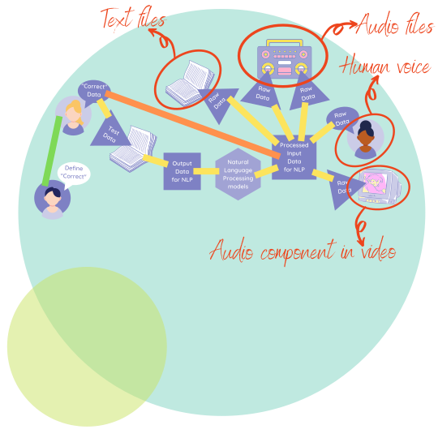

Real world machine learning
Contents
Real world machine learning#
Real world data (aka data in the wild) tends to be messy, unstructured and sporadically captured. As such, it is not enough to know about computer vision, natural language processing, data storytelling and data pipelining concepts, we need to actually apply them.
Having static data pipelining, computer vision and natural language processing is enough to build a sophisticated robot. However, this robot will need tons upon tons of data to be cleaned and organized by humans before it even comes to be. However, because of the nature of real world data, the output of our robot will still need to be corrected by humans, even as its mechanical parts are serviced by humans.
To complement the two applied areas of machine learning, we need data storytelling and dynamic data pipelining. Deploying machine learning models into the world can be incredibly complex, but nothing beats trying to
identify concept and model drift
systematically analyze error and optimize models
explain how everything works to key stakeholders to build trust
add new data sources into the data pipeline and removing ‘stale’ data
teach new people how to use the application housing the model
AT THE SAME TIME.
This can get very complicated, as shown in the visual below:

So let’s break it down.
The Break Down#
The environment#
Impactful machine learning has to incorporate both real world perspectives and technical expertise. It can be visualized as shown below:

Naturally, there is a need to bridge the gap between
people in the real world using the product (with no idea of what’s going on under the hood) and
technical people involved in the construction and maintenance of the machine learning system
This is where data storytelling comes in.
Data storytelling#
By using teaching techniques, stylistic devices (e.g. narrative, humour etc.) and great design (especially for data visualizations), data storytellers are able to help non-technical users identify
how the app would fit into their day-to-day,
what restrictions they need to protect their privacy and
what improvements they would need for the machine learning app to be used more intuitively
Once user requirements are obtained, data storytellers translate them into technical requirements,
so that the user controls the machine learning app, not the other way round.
This is visualized below:

Data storytellers can include infographic creators, data scientists, data analysts, statisticians and BI (Business Intelligence) developers.
A question then arises: How exactly will these requirements be implemented?
This is where data pipelining comes in.
Data pipelining#
To get valid results that can be valid stories, we need to make sure that the data on which the modelling is based is clean: that is:
approved by a domain expert
statistically validated
tracked as it undergoes transformation
organized as much as possible, once it enters the system
having complete metadata (data explaining characteristics of the data)
As they say: garbage in, garbage out. If the data is fed directly into the models in a haphazard manner; troubleshooting what went wrong or trying to explain the output given by the ML app becomes a nightmare.
Enter data pipelines - A smooth way to
ensure data lineage (having different labeled versions of the data as its being transformed, with the labels describing the various transformations in detail)
ensure data provenance (having metadata that explains the context around data collection, the characteristics of the various data sources and a high level explanation of the data transformation)
establish best practices to clean and standardize data
strengthen data security (due to the tracking) and quickly detect any data breaches if they were to occur
This is illustrated by the pipes in the image below:

Data pipeliners typically include IT, backend developers, machine learning engineers, data scientists and database administrators.
Now that the data infrastructure is in place, now we can enter into machine learning territory.
Machine Learning#
People
(High res version of team visualization is here)
{kind=link}
Machine learning comprises of two types of teams:
Technical teams
Non-technical teams
The technical team would comprise
the data administrators and pipeline builders,
the data preprocessors,
the ML algorithm design specialists,
the model implementers and evaluators and
the data storytellers
The non-technical team would comprise
the subject matter experts (they define what “correct” is)
the data entry workers
the checkers (those that make sure appropriate labels are applied correctly)
Both teams are integrated into the system - therefore, this system is commonly referred to as a Human in the Loop kind of machine learning system.
Advantages
Advantages of this method are that:
There is optimal specialization and division of labour
If the non-technical and technical team have frequent contact and all individuals collaborate, they can advise each other on things like
improvement of data labelling and preprocessing processes
error analysis
Disadvantages
Disadvantages of this method are that:
The cost of model development can increase, especially if the number of data entry and checking workers keeps growing with the available data.
There tend to be silos when this is implemented in the real world, with no room of growth; for instance, growing from a data checker to a machine learning engineer rarely happens.
Data entry and checking work tends to be subcontracted to less developed countries, and many subcontractors do not match pay and working conditions to global standards typically implemented in developed countries.
Data & Data Sources
The data can come into the system either as a batch (typically pre-recorded or pre-saved data) or as a stream (typically data that is captured on an ad-hoc basis in small amounts).
All the above affect how the data pipeline for the ML system will be built, as well as the analysis and modelling steps required.
The data endpoints may also be customized according to the consumer.
Data in use by the computer would need to be
put in by data entry workers and
seen by the technical team for encoding as it travels through the pipeline.
Data for the computer also tends to be in large amounts, a good amount of the time.
On the other hand, data in use by humans in the system (typically the non-technical team) would need to be
displayed in a way to ease user experience
shown in small samples at the beginning of the pipeline and at the checking stage of the pipeline
shown visually for high level users (e.g. a summary of data lineage and provenance, visualization of system logs etc.)
Models
There tend to be two types of models:
Pre-trained models
Built models.
Pre-trained models are trained by many other people and are made available to the public. They can be loaded into the system either through
the HuggingFace
transformerslibrary in Python,the
picklelibrary in Python orFastAPI as a REST API containing the pre-trained model
On the other hand, built models are loaded into the pipeline, then trained, tested and optimized there. They can be loaded through
the
scikit-learnlibrary in Python,the
JAXlibrary in Python,the
Tensorflowlibrary in Python orthe
Pytorchlibrary in Python
R, MATLAB and Julia also have many packages dedicated to specific models or groups of models that can be classified as built models, because they are trained inside the system.
Natural Language Processing (NLP)#
Data & Data Sources
Natural Language Processing has the following data sources

Text can be tricky because printed text (PDFs and scans) and/or text that is handwritten needs to be
converted to photo,
read using OCR and computer vision models,
converted to string, then
fed back into the NLP ML system as raw data
Otherwise, text directly input into computer systems and stored in common text formats are pretty easy to feed into an NLP system.
Data for the computer with regards to NLP is shown in the visual below:
On the other hand, data in use by humans in the system with regards to NLP is shown below:
Key Challenges
Technical challenges include:
Multilingualism (i.e. where more than one language is in a particular waveform[audio] or string[text]) - For many parts of the world, people tend to be bilingual or multilingual, hence getting monolingual language data becomes very difficult.
Language Evolution (i.e. where new words enter or old words leave a language over time) - This is especially true of various slang versions of the available languages.
Stylistic Device Recognition - NLP language models struggle to identify devices like hyperbole, humour, satire etc. when conducting sentiment analysis.
Diacritics and Language Scripts - many languages contain diacritics (symbols attached to letters to indicate different pronunciation e.g. ç in façade) and some languages use specific scripts (e.g Hangul 한글 script for Korean). This means that an NLP app built in Spanish may not recognize Korean.
Ethical challenges include:
Low Resource Languages - there are thousands upon thousands of languages spoken globally, each containing a significant number of dialects. Unfortunately, only a few languages are frequently recorded, leaving the vast majority of languages without enough data to train many of the sophisticated models in place today.
Fake avatars on social media - they can also be used in social engineering scams, where NLP and CV models are used to create a realistic looking person with the aim of fooling people into believing that they are dealing with a real human being on the other side of a chat.
Hate speech - on social media chats and on phone SMS, nefarious people can use NLP to spread hate speech and/or disinformation; they can also impersonate legitimate institutions and spam millions of unsuspecting customers in order to obtain login credentials and other sensitive information.
Computer Vision (CV)#
Data & Data Sources
Computer Vision has the following data sources

A pretty cool thing about digital images is that, due to use of common standards in storage (raw bytes, .PNG, .JPEG, .GIF, .SVG etc.), they can be visualized as is, or converted into numerical arrays.
Black and white photos tend to be easier to load, display and represent as arrays compared to colored photos.
Data for the computer with regards to CV is shown in the visual below:

On the other hand, data in use by humans in the system with regards to CV is shown below:

Key Challenges
Technical challenges include:
Data Retrieval - images, by nature, tend to be extremely heavy compared to text files (common input for NLP models). As such, cloud technology and use of programming languages that allow for parralelization of workflow such as
Goor libraries within programming languages that enable parralelization of tasks such as theDasklibrary inPythonis necessary. A side effect of this is that Computer Vision models can be very expensive to set up, deploy and maintain in terms of time and GPU/cloud space.
Ethical challenges include:
Surveillance - computer vision models in the wrong hands can facilitate unlawful, unethical and unauthorized surveillance of people by the powers that be.
Lack of diversity - many photos that are fed into computer vision models todaymay not have enough diverse examples for the computer to learn from. Also, a computer trained on both lighter and darker people, may still struggle to recognize people if it is put in an area with predominantly light people only, and/or disabled people, and/or people with drastic body modifications.
Deepfakes - computer vision models, particularly GANs (Generative Adversarial Networks), can be used to produce realistic looking photos and/or videos of real life people in the public eye with the main purpose of spreading propaganda and/or disinformation. Check one out in action below:
Optical illusions - even the most well trained model can struggle with identifying people wearing optical illusions, or people in an area that has many optical illusions.